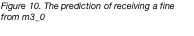

1 The relationship
between blood alcohol content and age.
1.1
According to the result of the model, the influence of age to bac is very significant (p = 2.9e-05) which means age
has a big influence on blood alcohol content. To be more specific, each 1
increase in age leads to 0.12996 decrease in bac. Adjusted R-squared equals 0.1098,
indicating that model accounts for 10.9% of the variance. F-statistic (p=1.041e-06 < 0.05)
is significant so the 
model is not a constant model and there are a
relationship between age and bac.
Residuals vs Fitted: There is an equally spread residuals around a horizontal
line suggesting the residuals have a liner pattern, so my linear model is appropriate
to the data.
Normal Q-Q: Residuals are close to the straight dashed line, which indicates
that they are standard normally distributed (mean = 0, sd = 1).
Scale-Location: A slightly non-horizontal line with points spread from across the
plot is observed, which means the residuals are spread unequally along the
range of the predictors. So, I assume the data is not very homoscedatic.
Residuals vs Leverage: There are a few
influential points (data 107, 187,246) which can not be fitted by the model.
Above all, some basic
assumptions are satisfied, others are not quite satisfied. According to the adjusted R-squared, my model has
rooms to be improved.
1.2
Applying predict function
to m1, the predicted blood alcohol content for a 50 year old driver is
21.76652.
1.3
As we can see the
Normal Q-Q from Figure 1, the residuals are not a standard
normal distribution but quite close to.
According to Figure 4, residuals are close to the straight dashed line
with the exception of a few points, which indicates that they are nearly
standard normally distributed (mean = 0, sd = 1).
2 Driving speeds,
night vs. day
2.1
I would apply linear
models for the reason that ‘bac’ (the dependent variable) is continuous.
Besides, the result of m1 shows that there could be a linear relationship
between ‘age’ and ‘bac’, so I think there could be the same case for ‘speeds’
and ‘nighttime’. Being allowed to apply linear model should check its
assumptions, that is, the residuals should be normality, homogeneity of
variance and independence. By plotting the model
diagnostics
of the models, I confirmed that those assumptions are satisfied. Then, I tried
4 linear models from m2_1 to m2_4.
According
to the anova, the p-value of time of day is significant, indicating that the
improvement made by adding new predictors 'nighttime' is not on chance. In
m2_3, bac increases by 3.55759 in night, while bac decreases by 0.12959 for
every unit of age. From m2_1 to m2_3, I found that time of day predict the bac
over and above the age with much larger coefficient than age's. However, speed
does not predict bac over and above age. Actually, based on the model m2_2, m2_3,
speed even would not predict bac since the p-value of it is not significant. Among model m1, m2_1~m2_4, m2_3
might fit best, considering its adjusted R^2 is the highest (0.1756), which
means the model accounts for 17.56% of the variance. In m2_4, I check how age,
nighttime or speed and their interaction predict bac, and it turns out not only
the interactions are quite small but also the model is not significant which
means their interactions could not predict the bac.
Above all, time of
day predict the bac over and above the age, while speed does not predict bac
over and above age.
2.2
By plotting the model
diagnostics
of the models, I confirmed that the assumptions of linear models are satisfied.
Based on the adjusted
R-square several models, drivers’ ages plus speeds accounts for 8.7% of
the variance, and time of day of incidents accounts for around 9.5% (17.2%-7.7%
= 9.5% ) of the variance.
2.3
As we can see in
Figure 7, it seems that the average speed in night is slightly faster than in
day, but the figure have no information about significance of the difference.
So, I would apply t-test, because it can tell us whether their difference is
significant. Before the t-test, I check whether the data satisfy the
assumptions of normal distribution and the homogeneity of their variance by
applying shapiro and leveneTest. In Shapiro, the W
equals 0.98803 which is close to 1, meaning speed is normally distributed.
While in leveneTest, the F = 2.2426 and
p = 0.1357. The p-value is bigger than 0.05, so the variance is homogeneous.
Then I apply the t-test, what I get is that the p-value equals 0.3892 which is
not significant, so there are no statistical difference between the speed at
night and speed at day.
In conclusion, people
don't drive faster at night than during the day.
3 Fines vs. Warnings
3.1
As we can see from
the Figure 8 and Figure 9, the higher blood alcohol content one has, the higher
possibility he or she would be fined. Similarly, the faster one drive, the
higher possibility he or she would get fined. Apart from that, elderly people
seems to have a lower probability to get a fine. Nevertheless, I could not find
out how prior offence influences the likelihood of getting a fine based on this
figure. So, I would look at the statistics values of the model I am going to
build, and focus more on variables like bac, speed and age.
Generalized liner
models would be established to figure out what variables contribute to the
likelihood of receive a fine. The
reason I choose the generalized liner model instead of the liner one is
that the dependent variable (outcome) is binomial.
First, I assume all
the variables would contributes to the outcome by constructing model m3_0. What
I found is that blood alcohol content might contributes the most of which
p-value is very significant, while speed and age could slightly influence the
outcome with one star significance.
After
constructing several models, I get table 1 showing the significance of each
variable and other important statistic values.
However, there remain
some issues in all these models. The model diagnostics of them shows that: 1).
There may be a slight non-linear pattern to the data. 2). Homogeneity of
Variance also potentially problematic 3). There are a couple of quite
influential points in the data which can not be fitted by these models.
Above all, I consider
the m3_2 fit best with highest residual deviance and significance. In conclusion, blood alcohol
content and speed contributes the most. As for the question what has the
biggest effect,1-sd increase in speed or 1-sd increase in bac. The influence of
speed in each standard deviation is 1.452639, which is bigger than bac
(1.083934), so speed has larger effect.
3.2
To figure out
whether people with prior drink driving offences (DR50) are more likely to get
a fine than those who have non-drink-related offences, I decide to compare the
distribution of 2 groups people (with and without DR50) getting a fine or
warning with the hypothesis distribution (people getting a fine or warning).
Chi-square-test can
be used to decide whether the two kinds of distribution are statistically the
same or different. The null hypothesis is that there are no difference between
the penalty rate in people with prior drink driving offences and that in
non-drink-related people. It turns out the p-value equals 0.05345, so it is not
significant, suggesting that the null hypothesis should be kept.
In conclusion, people
with prior drink driving offences (DR50) have statistically same possibility to
get a fine with those who have non-drink-related offences.
3.3
To understand whether
prior motoring offences of any kind would influence the likelihood of getting a
fine, we could establish a generalized linear model between them with the
former as one of independent variables and the latter as dependent variable. If
prior driving offences of any kind contributes to the dependent variable, the
p-value of it should be significant.
So, I added a new
column called motoring_offence, which tags people as with or without motoring
offence. Then I built a model m33 = glm(outcome ~ motoring_offence + age +
nighttime +speed + bac, data=DrinkDriving ,family = binomial). What I found is
that the p-value of variable 'motoring_offence' is not significant, meaning
that it would not influence the likelihood of getting a fine.
To sum up, prior
motoring offences of any kind would not influence the likelihood of receiving a
fine.

4 Plotting
predicted probabilities.
I put the required
new data into m3_0 which contains all the variables and what I got is Figure
10, with prediction ranging from close to 0 to 0.55. Then I tried m3_3 and plot the predictions for each age values.
The reason I choose m3_3 is that it is a better model than m3_0 as we can see
from question 2 table1. Since in model m3_3, age has a smaller effect on the
outcome compared to m3_0, it makes sense that various age makes a smaller difference
on the possibility of getting a fine, ranging from 0.01 to 0.17.
Both Figure 10 and 11 show a tendency that with the increase of age the
possibility of getting a fine would decrease.
5 Corrupt
cops
At a first glance of
the Figure 12, I find that officer AS barely give a fine to people over 75
years old, and those who under 50 years would always be fined by him. So, I
guess there might exist the case that one officer is biased on a driver's age.
To prove that, I made
a model for each officer and some important results are presented in Table 4.
Only officer AS has a significant p-value in terms of age which means age would
influence his judgement of fining. More importantly, the slope of age in model
m_as are over
twice compared to other officers’ models. Another method to prove the
hypothesis is combining officers to 3 groups and comparing the difference
between each other by contrast coding. From Figure 13, we can see that only
variable ‘officerITNPvAS’ is
significant, indicating group AS are different from group ITNP and group IT has
no significant difference from group NP.
As a result, I conclude that officer AS is biased
by not giving a fine to older people while tends to give a fine to the youngest.